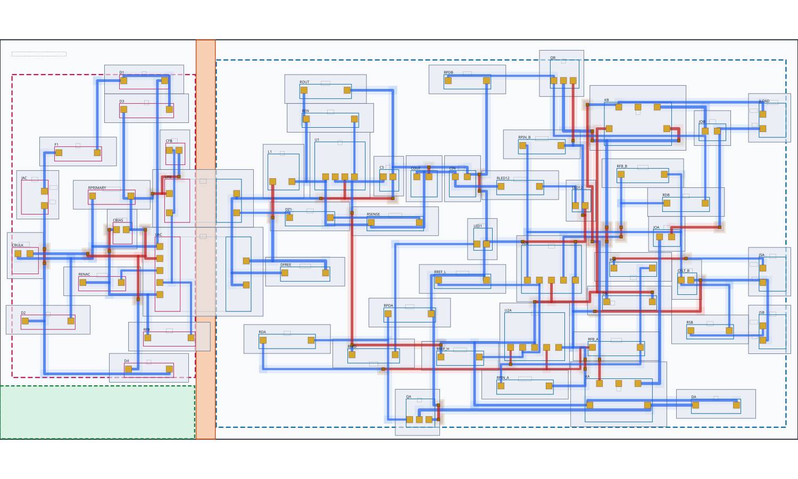
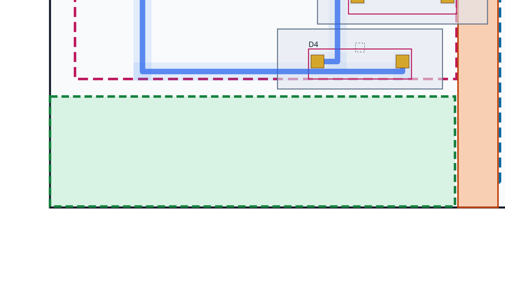
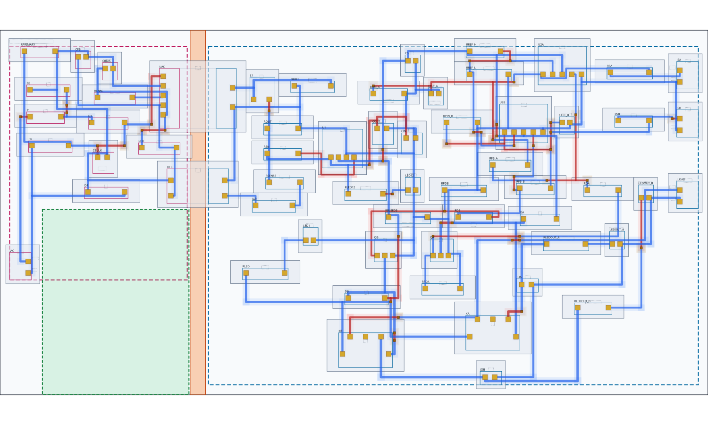
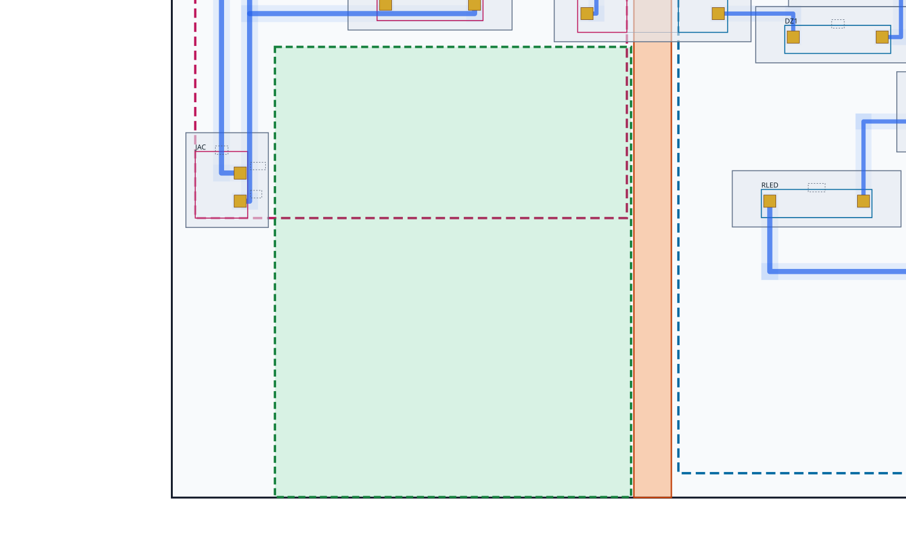

Developer evidence for accepted private13. Geometry is unchanged. Dashed domain unions are bounds of actual conductive courtyards, not allowed-placement rectangles. Green marks the existing conservative GRID10 largest protected empty rectangle; it does not prove a package can fit.



